<!DOCTYPE html>
<html lang="en">
<head>
    <meta charset="utf-8" />
    <meta name="viewport" content="width=device-width, initial-scale=1.0, maximum-scale=1.0, user-scalable=no" />

    <title></title>
    <link rel="stylesheet" href="dist/reset.css">
    <link rel="stylesheet" href="dist/reveal.css" />
    <link rel="stylesheet" href="css/slides-extended.css" />
    <link rel="stylesheet" href="dist/theme/iph.css" id="theme" />
    <link rel="stylesheet" href="plugin/highlight/spyder.css" />
    <link rel="stylesheet" href="plugin/customcontrols/style.css">


    <script defer src="dist/fontawesome/all.min.js"></script>

    <script type="text/javascript">
        function pageInIframe() {
            return (window.location !== window.parent.location);
        }

        let forgetPop = true;
        function onPopState(event) {
            if(forgetPop){
                forgetPop = false;
            } else if( pageInIframe()) {
                parent.postMessage(event.target.location.href, "app://obsidian.md");
            }
        }
        window.onpopstate = onPopState;
        window.onmessage = event => {
            if(event.data == "reload"){
                window.document.location.reload();
            }
            forgetPop = true;
        }

        function fitElements() {
            const itemsToFit = document.getElementsByClassName('fitText');
            for (const item in itemsToFit) {
                if (Object.hasOwnProperty.call(itemsToFit, item)) {
                    const element = itemsToFit[item];
                    fitElement(element, 1, 1000);
                    element.classList.remove('fitText');
                }
            }
        }

        function fitElement(element, start, end) {

            let size = (end + start) / 2;
            element.style.fontSize = `${size}px`;

            if (Math.abs(start - end) < 1) {
                while (element.scrollHeight > element.offsetHeight) {
                    size--;
                    element.style.fontSize = `${size}px`;
                }
                return;
            }

            if (element.scrollHeight > element.offsetHeight) {
                fitElement(element, start, size);
            } else {
                fitElement(element, size, end);
            }
        }


        document.onreadystatechange = () => {
            fitElements();
            if (document.readyState === 'complete') {
                if (pageInIframe() && window.location.href.indexOf("?export") != -1){
                    parent.postMessage(event.target.location.href, "app://obsidian.md");
                }
                if (window.location.href.indexOf("print-pdf") != -1){
                    let stateCheck = setInterval(() => {
                        clearInterval(stateCheck);
                        window.print();
                    }, 250);
                }
            }
        };
    </script>
</head>

<body>
    <div class="reveal">
        <div class="slides"><section  data-markdown><script type="text/template"><!-- .slide: class="has-light-background drop" template="" data-background-color="#f8f8f8" -->
<div class="" style="position: absolute; left: 0px; top: 0px; height: 1080px; width: 1920px; min-height: 1080px; display: flex; flex-direction: column; align-items: start; justify-content: center" absolute="true">

### Introducción a la Programación - Honores

 ####  *Metodología*

[Eduardo Rosales](mailto:ee.rosales24@uniandes.edu.co)

Departamento de Ingeniería de Sistemas y Computación

Universidad de los Andes
</div></script></section><section  data-markdown><script type="text/template"><!-- .slide: class="has-light-background drop" template="" data-background-color="#f8f8f8" -->
<div class="" style="position: absolute; left: 0px; top: 0px; height: 1080px; width: 1920px; min-height: 1080px; display: flex; flex-direction: column; align-items: start; justify-content: center" absolute="true">

### Metodología (1/6)

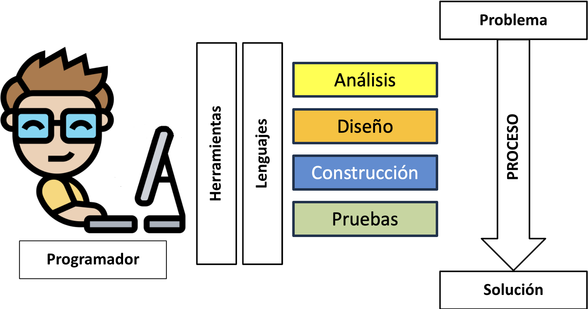
</div></script></section><section  data-markdown><script type="text/template"><!-- .slide: class="has-light-background drop" template="" data-background-color="#f8f8f8" -->
<div class="" style="position: absolute; left: 0px; top: 0px; height: 1080px; width: 1920px; min-height: 1080px; display: flex; flex-direction: column; align-items: start; justify-content: center" absolute="true">

### Metodología (2/6)

- En el curso, se aplica una versión resumida de la
  - Metodología de desarrollo de software:

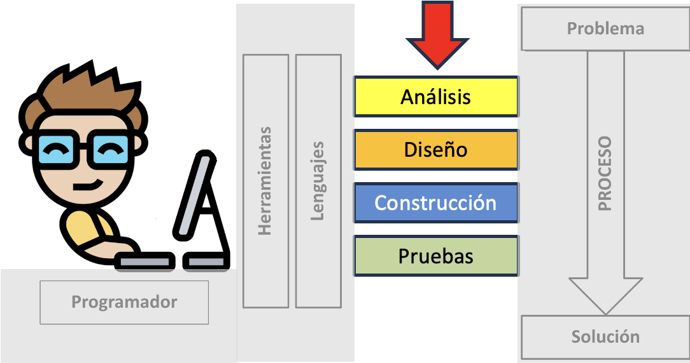
</div></script></section><section  data-markdown><script type="text/template"><!-- .slide: class="has-light-background drop" template="" data-background-color="#f8f8f8" -->
<div class="" style="position: absolute; left: 0px; top: 0px; height: 1080px; width: 1920px; min-height: 1080px; display: flex; flex-direction: column; align-items: start; justify-content: center" absolute="true">

### Metodología (3/6)

- **Análisis**
	- Leer y comprender el enunciado
		- **Comprensión de lectura**
	- Identificar y especificar el problema
		- Formulación de ejemplos
</div></script></section><section  data-markdown><script type="text/template"><!-- .slide: class="has-light-background drop" template="" data-background-color="#f8f8f8" -->
<div class="" style="position: absolute; left: 0px; top: 0px; height: 1080px; width: 1920px; min-height: 1080px; display: flex; flex-direction: column; align-items: start; justify-content: center" absolute="true">

### Metodología (4/6)

- **Diseño**
	- Usar el enfoque *Dividir y Conquistar*
		- Dividir el problema en sub-problemas
			- De solución más simple
	- **Diseñar y documentar algoritmos precisos y eficientes**
</div></script></section><section  data-markdown><script type="text/template"><!-- .slide: class="has-light-background drop" template="" data-background-color="#f8f8f8" -->
<div class="" style="position: absolute; left: 0px; top: 0px; height: 1080px; width: 1920px; min-height: 1080px; display: flex; flex-direction: column; align-items: start; justify-content: center" absolute="true">

### Metodología (5/6)

- **Construcción**
	- Codificar/implementar la solución usando:
        - Convenciones
        - **Buenas prácticas**
</div></script></section><section  data-markdown><script type="text/template"><!-- .slide: class="has-light-background drop" template="" data-background-color="#f8f8f8" -->
<div class="" style="position: absolute; left: 0px; top: 0px; height: 1080px; width: 1920px; min-height: 1080px; display: flex; flex-direction: column; align-items: start; justify-content: center" absolute="true">

### Metodología (6/6)

- **Pruebas**
	- Probar: 
		- Verificar el **correcto funcionamiento** del algoritmo
	- Depurar:
    	- Corregir errores
    	- **Pulir/mejorar/optimizar el código**
</div></script></section><section  data-markdown><script type="text/template"><!-- .slide: class="has-light-background drop" template="" data-background-color="#f8f8f8" -->
<div class="" style="position: absolute; left: 0px; top: 0px; height: 1080px; width: 1920px; min-height: 1080px; display: flex; flex-direction: column; align-items: start; justify-content: center" absolute="true">

### Conceptos fundamentales de programación

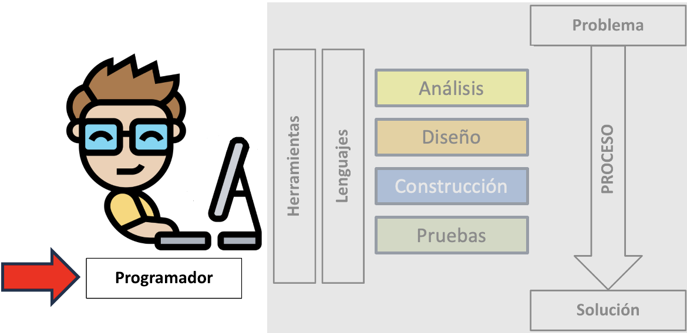
</div></script></section><section  data-markdown><script type="text/template"><!-- .slide: class="has-light-background drop" template="" data-background-color="#f8f8f8" -->
<div class="" style="position: absolute; left: 0px; top: 0px; height: 1080px; width: 1920px; min-height: 1080px; display: flex; flex-direction: column; align-items: start; justify-content: center" absolute="true">

### Algoritmo (1/3)

- Ejercicio mental individual:
	- Describa cómo manejar una bicicleta


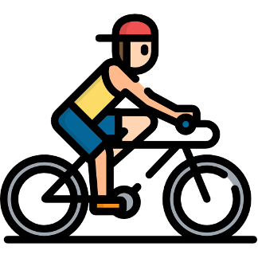
</div></script></section><section  data-markdown><script type="text/template"><!-- .slide: class="has-light-background drop" template="" data-background-color="#f8f8f8" -->
<div class="" style="position: absolute; left: 0px; top: 0px; height: 1080px; width: 1920px; min-height: 1080px; display: flex; flex-direction: column; align-items: start; justify-content: center" absolute="true">

### Algoritmo (2/3)


- **Algoritmo**
	- Secuencia de instrucciones para resolver un problema
	  - Las instrucciones deben ser:
	    -  Precisas
	    -  Organizadas
	- Produce una salida
	  - Para una entrada dada
	- Debe garantizarse que terminará
</div></script></section><section  data-markdown><script type="text/template"><!-- .slide: class="has-light-background drop" template="" data-background-color="#f8f8f8" -->
<div class="" style="position: absolute; left: 0px; top: 0px; height: 1080px; width: 1920px; min-height: 1080px; display: flex; flex-direction: column; align-items: start; justify-content: center" absolute="true">

### Algoritmo (3/3)


- ¿Cómo comunicar un algoritmo a un humano?
	- Típicamente en lenguaje natural
- Un algoritmo se puede expresar en lenguaje natural
</div></script></section><section  data-markdown><script type="text/template"><!-- .slide: class="has-light-background drop" template="" data-background-color="#f8f8f8" -->
<div class="" style="position: absolute; left: 0px; top: 0px; height: 1080px; width: 1920px; min-height: 1080px; display: flex; flex-direction: column; align-items: start; justify-content: center" absolute="true">

### Programando un computador (1/2)

- ¿Cómo comunicar un algoritmo a un computador?
	- Hay que aprender a especificar un problema
	- Hay que aprender a **expresar algoritmos**
</div></script></section><section  data-markdown><script type="text/template"><!-- .slide: class="has-light-background drop" template="" data-background-color="#f8f8f8" -->
<div class="" style="position: absolute; left: 0px; top: 0px; height: 1080px; width: 1920px; min-height: 1080px; display: flex; flex-direction: column; align-items: start; justify-content: center" absolute="true">

### Programando a un computador (2/2)

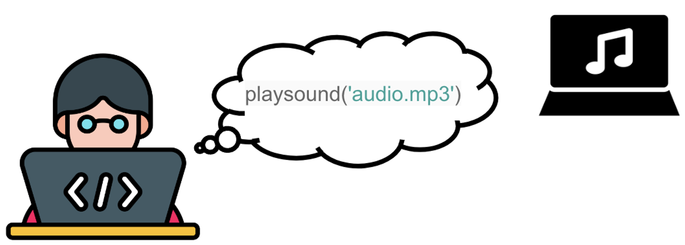


- ¿Cómo comunicar un algoritmo a un computador?
	- El algoritmo se "traduce" a un lenguaje 
		-  Interpretable por el computador
</div></script></section><section  data-markdown><script type="text/template"><!-- .slide: class="has-light-background drop" template="" data-background-color="#f8f8f8" -->
<div class="" style="position: absolute; left: 0px; top: 0px; height: 1080px; width: 1920px; min-height: 1080px; display: flex; flex-direction: column; align-items: start; justify-content: center" absolute="true">

### Lenguajes

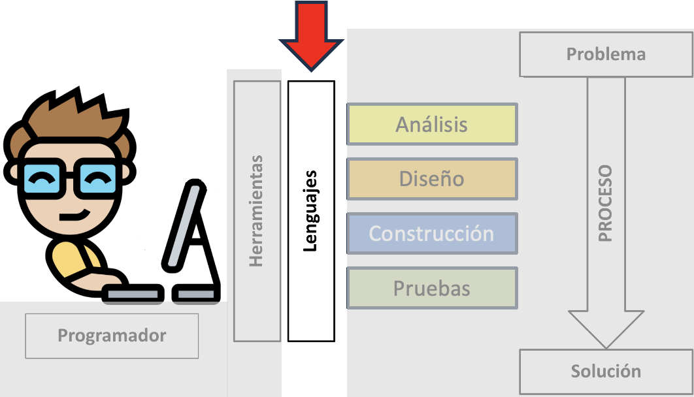
</div></script></section><section  data-markdown><script type="text/template"><!-- .slide: class="has-light-background drop" template="" data-background-color="#f8f8f8" -->
<div class="" style="position: absolute; left: 0px; top: 0px; height: 1080px; width: 1920px; min-height: 1080px; display: flex; flex-direction: column; align-items: start; justify-content: center" absolute="true">

### Lenguaje de programación

- Una notación para expresar tareas computacionales
- Permite escribir programas
</div></script></section><section  data-markdown><script type="text/template"><!-- .slide: class="has-light-background drop" template="" data-background-color="#f8f8f8" -->
<div class="" style="position: absolute; left: 0px; top: 0px; height: 1080px; width: 1920px; min-height: 1080px; display: flex; flex-direction: column; align-items: start; justify-content: center" absolute="true">

### Programa

- Conjunto de instrucciones que indican al computador cómo hacer una tarea
    - *Instrucción*: Comando que el computador puede interpretar
</div></script></section><section  data-markdown><script type="text/template"><!-- .slide: class="has-light-background drop" template="" data-background-color="#f8f8f8" -->
<div class="" style="position: absolute; left: 0px; top: 0px; height: 1080px; width: 1920px; min-height: 1080px; display: flex; flex-direction: column; align-items: start; justify-content: center" absolute="true">

### Programador

- Quien crea programas
  - Un “artista” encargado de programar

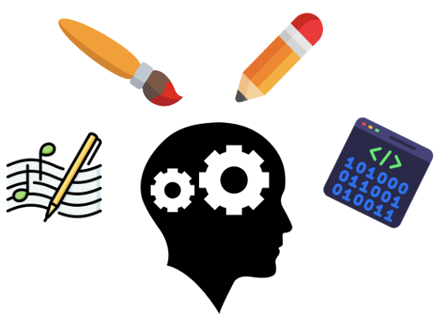
</div></script></section><section  data-markdown><script type="text/template"><!-- .slide: class="has-light-background drop" template="" data-background-color="#f8f8f8" -->
<div class="" style="position: absolute; left: 0px; top: 0px; height: 1080px; width: 1920px; min-height: 1080px; display: flex; flex-direction: column; align-items: start; justify-content: center" absolute="true">

### Programar

*"Programming is the **art of telling another human being what one wants the computer to do**"*  
Donald Knuth
</div></script></section><section  data-markdown><script type="text/template"><!-- .slide: class="has-light-background drop" template="" data-background-color="#f8f8f8" -->
<div class="" style="position: absolute; left: 0px; top: 0px; height: 1080px; width: 1920px; min-height: 1080px; display: flex; flex-direction: column; align-items: start; justify-content: center" absolute="true">

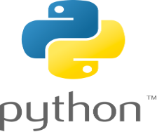


- **Python** es un lenguaje de programación
  - Uno muy importante en la actualidad

Fuente: [Python Software Foundation](https://www.python.org/)
</div></script></section><section  data-markdown><script type="text/template"><!-- .slide: class="has-light-background drop" template="" data-background-color="#f8f8f8" -->
<div class="" style="position: absolute; left: 0px; top: 0px; height: 1080px; width: 1920px; min-height: 1080px; display: flex; flex-direction: column; align-items: start; justify-content: center" absolute="true">

### Language popularity (TIOBE)

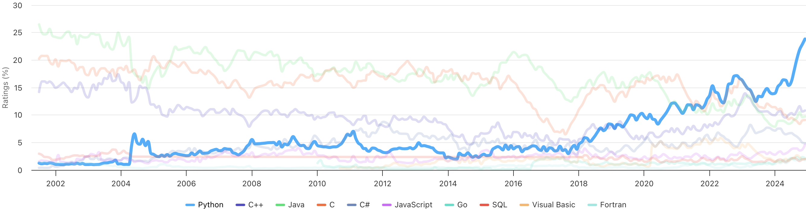


- Fuente: [Tiobe](https://www.tiobe.com/tiobe-index)
</div></script></section><section  data-markdown><script type="text/template"><!-- .slide: class="has-light-background drop" template="" data-background-color="#f8f8f8" -->
<div class="" style="position: absolute; left: 0px; top: 0px; height: 1080px; width: 1920px; min-height: 1080px; display: flex; flex-direction: column; align-items: start; justify-content: center" absolute="true">

### Top programming languages 2024 (GitHub)

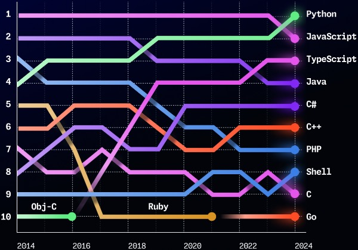


- Fuente: [GitHub](https://github.blog/news-insights/octoverse/octoverse-2024/)
</div></script></section><section  data-markdown><script type="text/template"><!-- .slide: class="has-light-background drop" template="" data-background-color="#f8f8f8" -->
<div class="" style="position: absolute; left: 0px; top: 0px; height: 1080px; width: 1920px; min-height: 1080px; display: flex; flex-direction: column; align-items: start; justify-content: center" absolute="true">

### Most in-demand programming languages 2024 (LinkedIn)

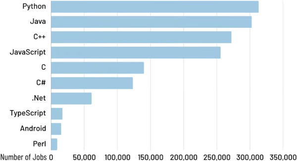


- Fuente: [Coding Nomads](https://codingnomads.com/blog/the-best-programming-languages-to-learn)
</div></script></section><section  data-markdown><script type="text/template"><!-- .slide: class="has-light-background drop" template="" data-background-color="#f8f8f8" -->
<div class="" style="position: absolute; left: 0px; top: 0px; height: 1080px; width: 1920px; min-height: 1080px; display: flex; flex-direction: column; align-items: start; justify-content: center" absolute="true">

### Lenguaje de Programación y algoritmos

- Los algoritmos son **independientes** del lenguaje de programación
- Los algoritmos se pueden expresar en:
	- Lenguaje natural
	- Lenguajes de programación (o pseudocódigo)
</div></script></section><section  data-markdown><script type="text/template"><!-- .slide: class="has-light-background drop" template="" data-background-color="#f8f8f8" -->
<div class="" style="position: absolute; left: 0px; top: 0px; height: 1080px; width: 1920px; min-height: 1080px; display: flex; flex-direction: column; align-items: start; justify-content: center" absolute="true">

### Herramientas

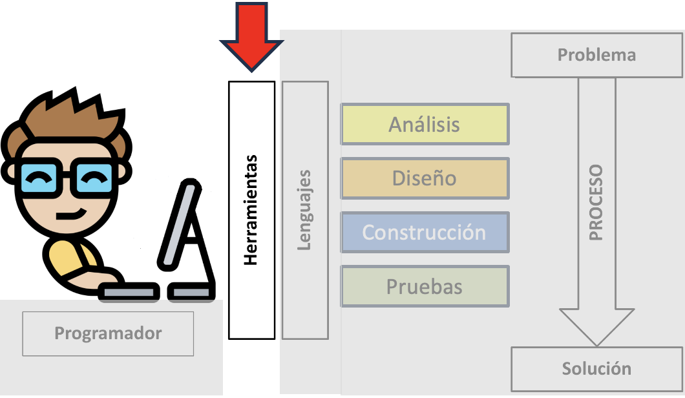
</div></script></section><section  data-markdown><script type="text/template"><!-- .slide: class="has-light-background drop" template="" data-background-color="#f8f8f8" -->
<div class="" style="position: absolute; left: 0px; top: 0px; height: 1080px; width: 1920px; min-height: 1080px; display: flex; flex-direction: column; align-items: start; justify-content: center" absolute="true">


- [Anaconda](https://www.anaconda.com/download)
	- Distribución de Python para e-Science
  	- Incluye a [Spyder](https://www.spyder-ide.org/)
</div></script></section><section  data-markdown><script type="text/template"><!-- .slide: class="has-light-background drop" template="" data-background-color="#f8f8f8" -->
<div class="" style="position: absolute; left: 0px; top: 0px; height: 1080px; width: 1920px; min-height: 1080px; display: flex; flex-direction: column; align-items: start; justify-content: center" absolute="true">


- [Spyder](https://www.spyder-ide.org/)
  - Entorno de Desarrollo Integrado 
	- *Integrated Development Environment - IDE*
</div></script></section><section  data-markdown><script type="text/template"><!-- .slide: class="has-light-background drop" template="" data-background-color="#f8f8f8" -->
<div class="" style="position: absolute; left: 0px; top: 0px; height: 1080px; width: 1920px; min-height: 1080px; display: flex; flex-direction: column; align-items: start; justify-content: center" absolute="true">

### Spyder - Interfaz 

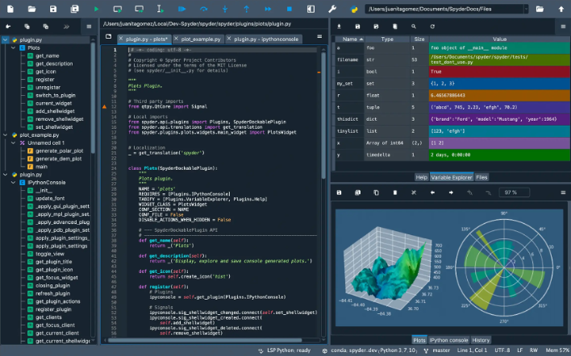
</div></script></section><section  data-markdown><script type="text/template"><!-- .slide: class="has-light-background drop" template="" data-background-color="#f8f8f8" -->
<div class="" style="position: absolute; left: 0px; top: 0px; height: 1080px; width: 1920px; min-height: 1080px; display: flex; flex-direction: column; align-items: start; justify-content: center" absolute="true">

#### Spyder - Componentes

- **Editor**:
  - Para escribir y modificar el código fuente
- **Depurador**:
  - Para identificar y corregir errores en el código
- **Terminal**:
  - Para ejecutar y probar código fuente
</div></script></section><section  data-markdown><script type="text/template"><!-- .slide: class="has-light-background drop" template="" data-background-color="#f8f8f8" -->
<div class="" style="position: absolute; left: 0px; top: 0px; height: 1080px; width: 1920px; min-height: 1080px; display: flex; flex-direction: column; align-items: start; justify-content: center" absolute="true">

### Código fuente

- Código legible por el humano
	- Escrito en un lenguaje de programación
</div></script></section><section  data-markdown><script type="text/template"><!-- .slide: class="has-light-background drop" template="" data-background-color="#f8f8f8" -->
<div class="" style="position: absolute; left: 0px; top: 0px; height: 1080px; width: 1920px; min-height: 1080px; display: flex; flex-direction: column; align-items: start; justify-content: center" absolute="true">

### Código objeto

- Versión traducida del código fuente
	- Código no legible por el humano
</div></script></section><section  data-markdown><script type="text/template"><!-- .slide: class="has-light-background drop" template="" data-background-color="#f8f8f8" -->
<div class="" style="position: absolute; left: 0px; top: 0px; height: 1080px; width: 1920px; min-height: 1080px; display: flex; flex-direction: column; align-items: start; justify-content: center" absolute="true">

### Lenguaje de máquina

- Instrucciones *binarias* que la CPU puede ejecutar
	- Binario: 
		- Sistema numérico 
			- Que utiliza solo los dígitos 0 y 1
</div></script></section><section  data-markdown><script type="text/template"><!-- .slide: class="has-light-background drop" template="" data-background-color="#f8f8f8" -->
<div class="" style="position: absolute; left: 0px; top: 0px; height: 1080px; width: 1920px; min-height: 1080px; display: flex; flex-direction: column; align-items: start; justify-content: center" absolute="true">

### En resumen...
  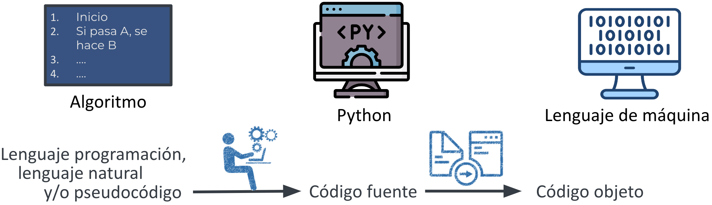
</div></script></section><section  data-markdown><script type="text/template"><!-- .slide: class="has-light-background drop" template="" data-background-color="#f8f8f8" -->
<div class="" style="position: absolute; left: 0px; top: 0px; height: 1080px; width: 1920px; min-height: 1080px; display: flex; flex-direction: column; align-items: start; justify-content: center" absolute="true">

# Mi primer programa en Python
</div></script></section><section  data-markdown><script type="text/template"><!-- .slide: class="has-light-background drop" template="" data-background-color="#f8f8f8" -->
<div class="" style="position: absolute; left: 0px; top: 0px; height: 1080px; width: 1920px; min-height: 1080px; display: flex; flex-direction: column; align-items: start; justify-content: center" absolute="true">

### El problema

- Se requiere un programa que sume dos números
</div></script></section><section  data-markdown><script type="text/template"><!-- .slide: class="has-light-background drop" template="" data-background-color="#f8f8f8" -->
<div class="" style="position: absolute; left: 0px; top: 0px; height: 1080px; width: 1920px; min-height: 1080px; display: flex; flex-direction: column; align-items: start; justify-content: center" absolute="true">

### Metodología


</div></script></section><section  data-markdown><script type="text/template"><!-- .slide: class="has-light-background drop" template="" data-background-color="#f8f8f8" -->
<div class="" style="position: absolute; left: 0px; top: 0px; height: 1080px; width: 1920px; min-height: 1080px; display: flex; flex-direction: column; align-items: start; justify-content: center" absolute="true">

# Análisis

- **Identificar el problema:**
	- Suma aritmética de dos números enteros

- **Comprender el problema:**
	- Formulación de ejemplos
```plaintext
0 + 0 = 0
2 + 2 = 4
-2 + 5 = 3
```
</div></script></section><section  data-markdown><script type="text/template"><!-- .slide: class="has-light-background drop" template="" data-background-color="#f8f8f8" -->
<div class="" style="position: absolute; left: 0px; top: 0px; height: 1080px; width: 1920px; min-height: 1080px; display: flex; flex-direction: column; align-items: start; justify-content: center" absolute="true">

### Diseño (1/3)

- **¿Cuál es el propósito del programa?**
	- &shy;<!-- .element: class="fragment" data-fragment-index="1" -->Calcular la suma aritmética de dos números enteros
	
- **¿Qué datos de entrada se requieren?**
	- &shy;<!-- .element: class="fragment" data-fragment-index="2" -->Dos números enteros

- **¿Cuál sería el resultado?**
	- &shy;<!-- .element: class="fragment" data-fragment-index="3" -->Un número entero que es
		- &shy;<!-- .element: class="fragment" data-fragment-index="4" -->La suma aritmética de los datos de entrada
</div></script></section><section  data-markdown><script type="text/template"><!-- .slide: class="has-light-background drop" template="" data-background-color="#f8f8f8" -->
<div class="" style="position: absolute; left: 0px; top: 0px; height: 1080px; width: 1920px; min-height: 1080px; display: flex; flex-direction: column; align-items: start; justify-content: center" absolute="true">

### Diseño (2/3)

- Escribir la documentación\* en Python:

```Python
    '''
    Retorna la suma de dos números enteros.

    Parámetros:
        a (int): Primer número entero a sumar.
        b (int): Segundo número entero a sumar.

    Retorno:
        (int): El resultado de sumar a y b.
	'''
```

\* Más adelante estudiaremos en detalle la documentación en Python
</div></script></section><section  data-markdown><script type="text/template"><!-- .slide: class="has-light-background drop" template="" data-background-color="#f8f8f8" -->
<div class="" style="position: absolute; left: 0px; top: 0px; height: 1080px; width: 1920px; min-height: 1080px; display: flex; flex-direction: column; align-items: start; justify-content: center" absolute="true">

### Diseño (3/3)

- Escribir las pruebas\* en Python:

```Python[11-17]
    '''
    Retorna la suma de dos números enteros.

    Parámetros:
        a (int): Primer número entero a sumar.
        b (int): Segundo número entero a sumar.

    Retorno:
        (int): El resultado de sumar a y b.
        
	Pruebas:
        >>> suma(0, 0)
        0
        >>> suma(2, 2)
        4
        >>> suma(-2, 5)
        3
    '''
```


\* Más adelante estudiaremos en detalle las pruebas en Python
</div></script></section><section  data-markdown><script type="text/template"><!-- .slide: class="has-light-background drop" template="" data-background-color="#f8f8f8" -->
<div class="" style="position: absolute; left: 0px; top: 0px; height: 1080px; width: 1920px; min-height: 1080px; display: flex; flex-direction: column; align-items: start; justify-content: center" absolute="true">

### Construcción (1/2)

- Usaremos una función\* que denominaremos: "sumar"
	- **Función** (introducción preliminar)
		- Código reutilizable diseñado para una tarea específica
		- Puede tomar datos de entrada
		- Produce un resultado

\* Más adelante estudiaremos en detalle el concepto de función en Python
</div></script></section><section  data-markdown><script type="text/template"><!-- .slide: class="has-light-background drop" template="" data-background-color="#f8f8f8" -->
<div class="" style="position: absolute; left: 0px; top: 0px; height: 1080px; width: 1920px; min-height: 1080px; display: flex; flex-direction: column; align-items: start; justify-content: center" absolute="true">

### Construcción (2/2)

- Implementar\* la función `suma()`

```Python[1, 20]
def suma(num1: int, num2: int) -> int:
    '''
    Retorna la suma de dos números enteros.

    Parámetros:
        a (int): Primer número entero a sumar.
        b (int): Segundo número entero a sumar.

    Retorno:
        (int): El resultado de sumar num1 y num2.
        
	Pruebas:
        >>> suma(0, 0)
        0
        >>> suma(2, 2)
        4
        >>> suma(-2, 5)
        3
    '''
    return num1 + num2
```

\* Más adelante estudiaremos en detalle la sintaxis para implementar funciones en Python
</div></script></section><section  data-markdown><script type="text/template"><!-- .slide: class="has-light-background drop" template="" data-background-color="#f8f8f8" -->
<div class="" style="position: absolute; left: 0px; top: 0px; height: 1080px; width: 1920px; min-height: 1080px; display: flex; flex-direction: column; align-items: start; justify-content: center" absolute="true">

### Pruebas (1/7)

- Configurar el ambiente de pruebas\* de la función `suma()`

```Python[1, 24]
import doctest

def suma(num1: int, num2: int) -> int:
    '''
    Retorna la suma de dos números enteros.

    Parámetros:
        a (int): Primer número entero a sumar.
        b (int): Segundo número entero a sumar.

    Retorno:
        (int): El resultado de sumar num1 y num2.
        
	Pruebas:
        >>> suma(0, 0)
        0
        >>> suma(2, 2)
        4
        >>> suma(-2, 5)
        3
    '''
    return num1 + num2
    
doctest.run_docstring_examples(suma, globals(), verbose=True)
```

\* Más adelante estudiaremos en detalle cómo configurar el ambiente de pruebas de una función en Python
</div></script></section><section  data-markdown><script type="text/template"><!-- .slide: class="has-light-background drop" template="" data-background-color="#f8f8f8" -->
<div class="" style="position: absolute; left: 0px; top: 0px; height: 1080px; width: 1920px; min-height: 1080px; display: flex; flex-direction: column; align-items: start; justify-content: center" absolute="true">

### Pruebas (2/7)

- Ejecutar las pruebas* de la función `suma()`
	-  ✅ Todos los tests son éxitosos

```Plaintext
Finding tests in NoName
Trying:
    suma(0, 0)
Expecting:
    0
ok
Trying:
    suma(2, 2)
Expecting:
    4
ok
Trying:
    suma(-2, 5)
Expecting:
    3
ok
```

\* Más adelante estudiaremos en detalle cómo ejecutar las pruebas de una función e interpretar los resultados
</div></script></section><section  data-markdown><script type="text/template"><!-- .slide: class="has-light-background drop" template="" data-background-color="#f8f8f8" -->
<div class="" style="position: absolute; left: 0px; top: 0px; height: 1080px; width: 1920px; min-height: 1080px; display: flex; flex-direction: column; align-items: start; justify-content: center" absolute="true">

### Pruebas (3/7)

- Ejemplo para generar pruebas fallidas:
	- Se omite la suma
		- La salida será únicamente el valor de `num1`

```Python[22]
import doctest

def suma(num1: int, num2: int) -> int:
    '''
    Retorna la suma de dos números enteros.

    Parámetros:
        a (int): Primer número entero a sumar.
        b (int): Segundo número entero a sumar.

    Retorno:
        (int): El resultado de sumar num1 y num2.
        
	Pruebas:
        >>> suma(0, 0)
        0
        >>> suma(2, 2)
        4
        >>> suma(-2, 5)
        3
    '''
    # Implementación errónea:
    return num1
    
doctest.run_docstring_examples(suma, globals(), verbose=True)
```
</div></script></section><section  data-markdown><script type="text/template"><!-- .slide: class="has-light-background drop" template="" data-background-color="#f8f8f8" -->
<div class="" style="position: absolute; left: 0px; top: 0px; height: 1080px; width: 1920px; min-height: 1080px; display: flex; flex-direction: column; align-items: start; justify-content: center" absolute="true">

### Pruebas (4/7)

- Ejecutar las pruebas* de la función `suma()`

```Plaintext
Finding tests in NoName
Trying:
    suma(0, 0)
Expecting:
    0
ok
Trying:
    suma(2, 2)
Expecting:
    4
**********************************************************************
File "/Users/eduardo/.spyder-py3/temp.py", line 24, in NoName
Failed example:
    suma(2, 2)
Expected:
    4
Got:
    2
Trying:
    suma(-2, 5)
Expecting:
    3
**********************************************************************
File "/Users/eduardo/.spyder-py3/temp.py", line 26, in NoName
Failed example:
    suma(-2, 5)
Expected:
    3
Got:
    -2
```
</div></script></section><section  data-markdown><script type="text/template"><!-- .slide: class="has-light-background drop" template="" data-background-color="#f8f8f8" -->
<div class="" style="position: absolute; left: 0px; top: 0px; height: 1080px; width: 1920px; min-height: 1080px; display: flex; flex-direction: column; align-items: start; justify-content: center" absolute="true">

### Pruebas (5/7)

- El primer test es exitoso
	- Porque el resultado es igual a 0, si `num1` es 0
	
```Python
def suma(num1: int, num2: int) -> int:
    # Implementación errónea:
    return num1
```

```Plaintext
Trying:
    suma(0, 0)
Expecting:
    0
ok
```

- Esto destaca la importancia de hacer *varias* pruebas
</div></script></section><section  data-markdown><script type="text/template"><!-- .slide: class="has-light-background drop" template="" data-background-color="#f8f8f8" -->
<div class="" style="position: absolute; left: 0px; top: 0px; height: 1080px; width: 1920px; min-height: 1080px; display: flex; flex-direction: column; align-items: start; justify-content: center" absolute="true">

### Pruebas (6/7)

- El segundo test falla
	- Porque el resultado es 2, si `num1 es 2

```Python
def suma(num1: int, num2: int) -> int:
    # Implementación errónea:
    return num1
```

```Plaintext
Failed example:
    suma(2, 2)
Expected:
    4
Got:
    2
Trying:
    suma(-2, 5)
Expecting:
    3
```
</div></script></section><section  data-markdown><script type="text/template"><!-- .slide: class="has-light-background drop" template="" data-background-color="#f8f8f8" -->
<div class="" style="position: absolute; left: 0px; top: 0px; height: 1080px; width: 1920px; min-height: 1080px; display: flex; flex-direction: column; align-items: start; justify-content: center" absolute="true">

### Pruebas (7/7)

```Python
def suma(num1: int, num2: int) -> int:
    # Implementación errónea:
    return num1
```

- El tercer test falla
	- Porque el resultado es -2, si `num1 es -2

```Plaintext
Failed example:
    suma(-2, 5)
Expected:
    3
Got:
    -2
```
</div></script></section><section  data-markdown><script type="text/template"><!-- .slide: class="has-light-background drop" template="" data-background-color="#f8f8f8" -->
<div class="" style="position: absolute; left: 0px; top: 0px; height: 1080px; width: 1920px; min-height: 1080px; display: flex; flex-direction: column; align-items: start; justify-content: center" absolute="true">

### Quiz

- En el enunciado impreso:
	1.  Se requiere un programa para multiplicar dos números enteros
		- En Python el símbolo: `*` se usa para multiplicar
	
	2.  Se requiere un programa para dividir dos números
		- En Python el símbolo: `/` se usa para dividir
</div></script></section><section  data-markdown><script type="text/template"><!-- .slide: class="has-light-background drop" template="" data-background-color="#f8f8f8" -->
<div class="" style="position: absolute; left: 0px; top: 0px; height: 1080px; width: 1920px; min-height: 1080px; display: flex; flex-direction: column; align-items: start; justify-content: center" absolute="true">

# ¿Preguntas?
</div></script></section><section  data-markdown><script type="text/template"><!-- .slide: class="has-light-background drop" template="" data-background-color="#f8f8f8" -->
<div class="" style="position: absolute; left: 0px; top: 0px; height: 1080px; width: 1920px; min-height: 1080px; display: flex; flex-direction: column; align-items: start; justify-content: center" absolute="true">

<style>
  table {
    width: 50%;
    border-collapse: collapse;
  }
  td {
    padding: 12px;
    text-align: justify;
    font-size: 20px; 
    border: 0.5px solid black; 
  }
</style>

<table>
  <tr>
    <td>
      <strong>Copyright © 2025 Universidad de los Andes</strong>. Esta obra se encuentra sujeta a una licencia Creative Commons 
      <a href="https://creativecommons.org/licenses/by-nc-nd/4.0/legalcode">"Attribution-NonCommercial-NoDerivatives 4.0 International"</a>. 
      <strong>Atribución-NoComercial-SinDerivadas:</strong> Esta licencia es la más restrictiva de las seis licencias principales, sólo permite que otros puedan descargar las obras y compartirlas con otras personas, siempre que se reconozca su autoría, pero no se pueden cambiar de ninguna manera ni se pueden utilizar comercialmente. 
      Puede ser reproducida para cualquier uso no-comercial, otorgando crédito a la Universidad de los Andes. No se permiten obras derivadas. 
      El uso del nombre de la Universidad de los Andes para cualquier fin distinto al reconocimiento respectivo y el uso de su logotipo, no están autorizados por esta licencia. 
      <strong>Universidad de los Andes | Vigilada Mineducación</strong> Reconocimiento como Universidad, Decreto 1297 del 30 de mayo de 1964. 
      Reconocimiento personería jurídica Resolución 28 del 23 de febrero de 1949 Min. Justicia.
      Fuente de iconos: <a href=https://www.flaticon.com>"www.flaticon.com"</a>. <strong>Licencia Flaticon</strong>: Gratis para uso personal o comercial con atribución, como se hace aquí de forma explícita y pública.
    </td>
  </tr>
</table>
</div></script></section></div>
    </div>

    <script src="dist/reveal.js"></script>
    <script src="plugin/notes/notes.js"></script>
    <script src="plugin/markdown/markdown.js"></script>
    <script src="plugin/highlight/highlight.js"></script>

    <script src="plugin/zoom/zoom.js"></script>
    <script src="plugin/math/math.js"></script>
    <script src="plugin/mermaid/mermaid.js"></script>
    <script src="plugin/chart/chart.min.js"></script>
    <script src="plugin/chart/plugin.js"></script>
    <script src="plugin/customcontrols/plugin.js"></script>

    <script>
        function extend() {
            const target = {};
            for (let i = 0; i < arguments.length; i++) {
                const source = arguments[i];
                for (const key in source) {
                    if (source.hasOwnProperty(key)) {
                        target[key] = source[key];
                    }
                }
            }
            return target;
        }

        function isLight(color) {
            let hex = color.replace('#', '');

            // convert #fff => #ffffff
            if (hex.length == 3) {
                hex = `${hex[0]}${hex[0]}${hex[1]}${hex[1]}${hex[2]}${hex[2]}`;
            }

            const c_r = parseInt(hex.substr(0, 2), 16);
            const c_g = parseInt(hex.substr(2, 2), 16);
            const c_b = parseInt(hex.substr(4, 2), 16);
            const brightness = ((c_r * 299) + (c_g * 587) + (c_b * 114)) / 1000;
            return brightness > 155;
        }

        const bgColor = getComputedStyle(document.documentElement).getPropertyValue('--r-background-color').trim();

        if (isLight(bgColor)) {
            document.body.classList.add('has-light-background');
        } else {
            document.body.classList.add('has-dark-background');
        }

        // default options to init reveal.js
        const defaultOptions = {
            controls: true,
            progress: true,
            history: true,
            center: true,
            transition: 'default', // none/fade/slide/convex/concave/zoom
            plugins: [
                RevealMarkdown,
                RevealHighlight,
                RevealZoom,
                RevealNotes,
                RevealMath.MathJax3,
                RevealMermaid,
                RevealChart,
                RevealCustomControls,
            ],
            allottedTime: 120 * 1000,
            mathjax3: {
                mathjax: 'plugin/math/mathjax/tex-mml-chtml.js',
            },
            markdown: {
                gfm: true,
                mangle: true,
                pedantic: false,
                smartLists: false,
                smartypants: false,
            },
            mermaid: {
                theme: isLight ? 'default' : 'dark',
            },
            customcontrols: {
                controls: [
                ]
            },
        };

        if ( pageInIframe() ) {
            defaultOptions.scrollActivationWidth = 5;
        }

        // options from URL query string
        const queryOptions = Reveal().getQueryHash() || {};

        const options = extend(defaultOptions, {"controls":true,"progress":true,"slideNumber":true,"center":false,"transition":"slide","transitionSpeed":"normal","width":"1920","height":"1080","margin":0.04}, queryOptions);
    </script>

    <script>
      Reveal.initialize(options);
    </script>
</body>

<!-- created with Slides Extended -->
</html>
